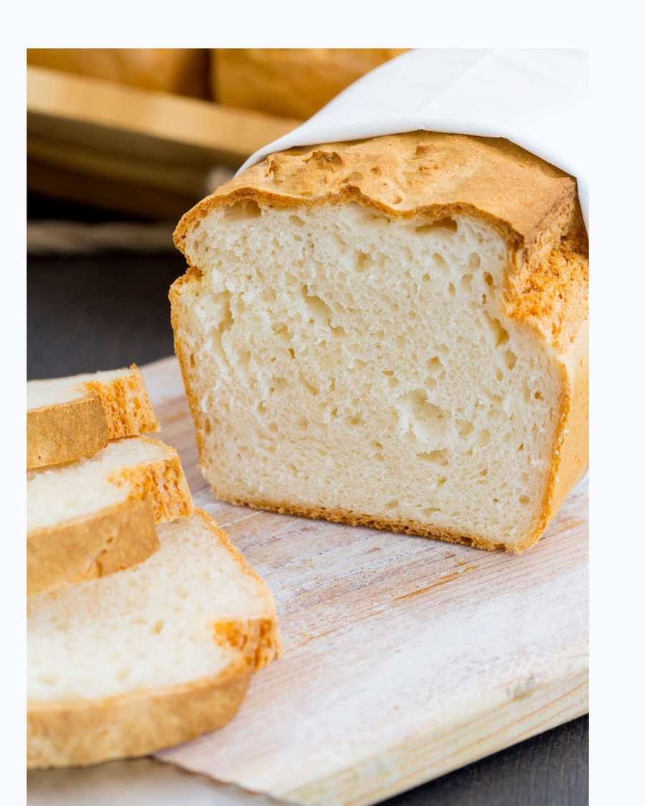
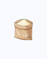
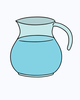
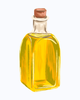
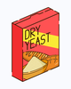

Pan Sin Gluten
🛒 Ingredientes




👨🍳 Preparación
-
1
Amasado: Usa una batidora con ganchos (KitchenAid o similar). Amasa 3 minutos a velocidad baja para integrar, luego 3 minutos a velocidad media-alta. Si lo haces a mano, mezcla con espátula rígida con fuerza — la masa sin gluten es muy pegajosa.
-
2
Formado: Con las manos aceitadas, divide la masa en porciones de 90 g. Bolea y dales forma redonda. Colócalas en una bandeja engrasada o con papel para hornear.
-
3
Fermentación: Deja levar en un lugar cálido (como dentro del microondas apagado) durante 40–50 minutos. Haz dos cortes diagonales en la parte superior con un cuchillo muy afilado.
-
4
Vapor casero: Coloca una bandeja vacía en el fondo del horno mientras se precalienta. Al meter el pan, vierte medio vaso de agua hirviendo en esa bandeja y cierra la puerta rápidamente.
-
5
Horneado: Precalienta el horno a 240°C. A los 5 minutos baja a 230°C. Tiempo total: 22–24 minutos.